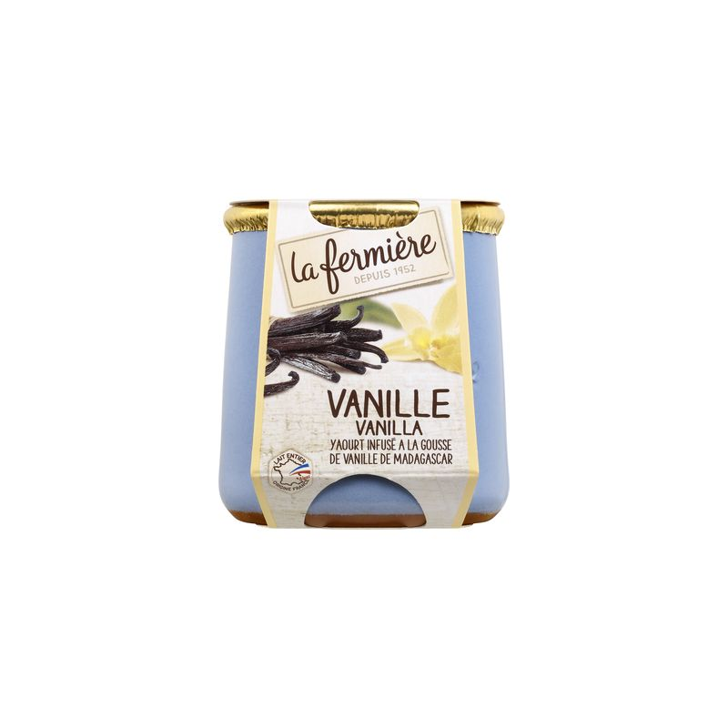
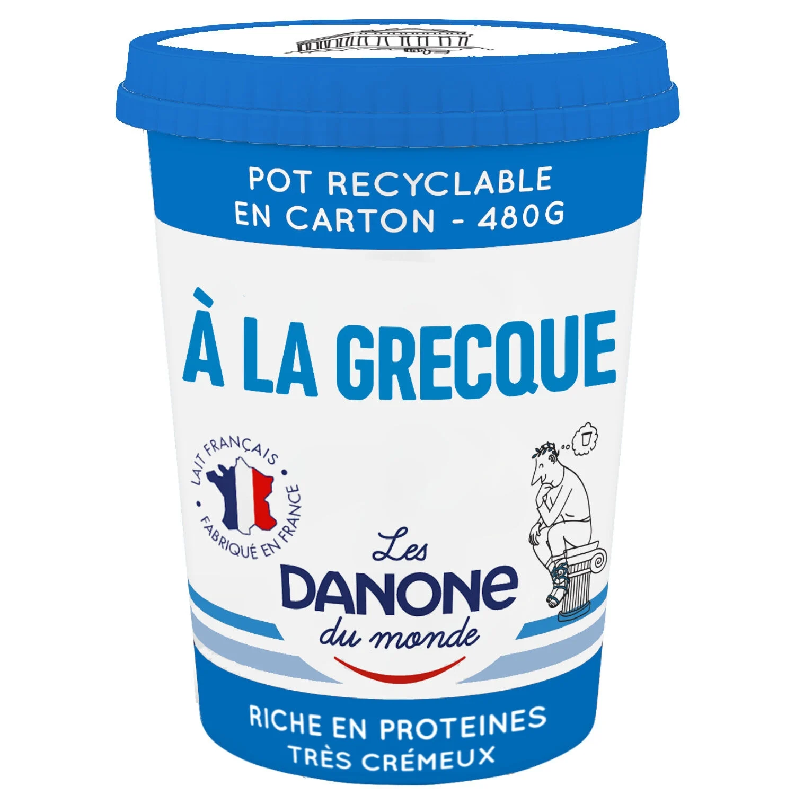
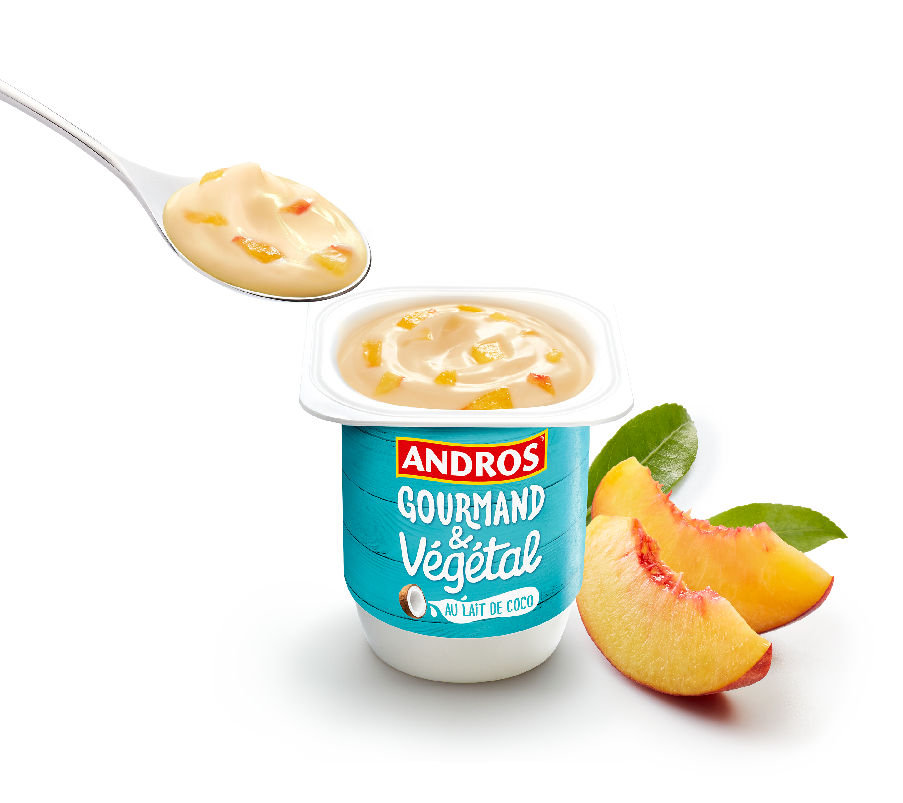
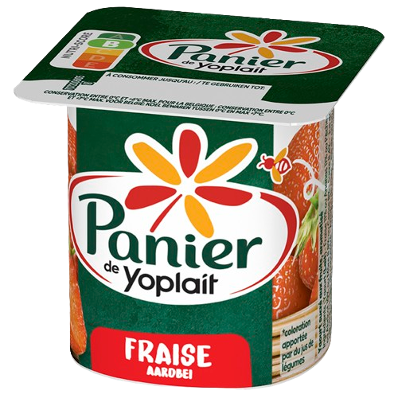
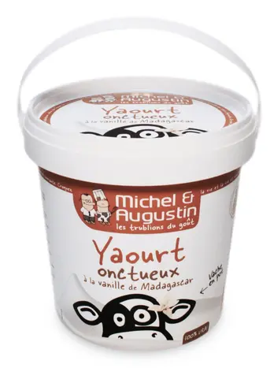

| 1 |
La Fermière Vanille |
Yaourt brassé |
Vanille |
Très onctueux |
Goût vraiment authentique, texture ultra crémeuse… on sent presque la vache qui sourit derrière 😌. Le pot en verre donne envie d’être écolo rien que pour le garder. |
 |
| 2 |
Danone Nature à la Grecque |
Yaourt grec |
Vanille |
Épais et crémeux |
Très riche et satisfaisant, un yaourt qui ne plaisante pas avec la texture. Parfait pour ceux qui veulent se sentir en Méditerranée sans quitter la cuisine. |
 |
| 3 |
Andros Gourmand & Végétal |
Végétal |
Pêche |
Lisse et léger |
Super option sans lactose, goût fruité et frais. On dirait un dessert d’été qui s’est perdu dans le rayon healthy 🌞. |
 |
| 4 |
Panier de Yoplait Fraise |
Classique |
Fraise |
Ferme |
Le grand classique du frigo familial 🍓. Toujours bon, toujours sucré, toujours là quand tu ne sais pas quoi prendre. |
 |
| 5 |
Michel et Augustin Brassé Nature |
Yaourt brassé |
Vanille |
Doux et crémeux |
Texture soyeuse, goût naturel, packaging sympa — le genre de yaourt qui te tutoie et te parle de bonheur dans ton frigo 😄. |
 |